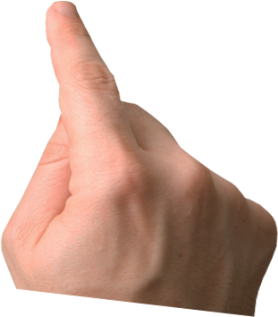
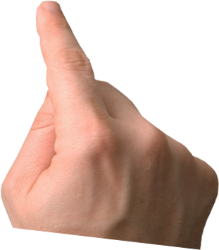

KREATURA MEDIA
presents


LAYERSLIDER
GREENSOCK ENGINE
with the latest technologies
SMOOTH RENDERING
with hardware-acceleration
NEW TRANSITIONS
slide, fade, scale, skew and rotate layers even in 3D
CLEANER MARKUP
working with the plugin is more easy
&
RESPONSIVE
mobile ready
VERSION
5
WITH HUGE
AND
PERFORMANCE
FEATURE UPDATE


 

8x
performance
many new
features


introducing
PARALLAX LAYERS


Move your mouse
over this slide!

FANCY PARALLAX EFFECT
by mouse move


embedding videos?

video
video
video + audio
RICH MEDIA SUPPORT
WITH OPTIONAL AUTOPLAY


&
ALL THESE FEATURES
much more!
...to create
THE BEST SLIDER
with no compromises!

Please check the other demo sliders